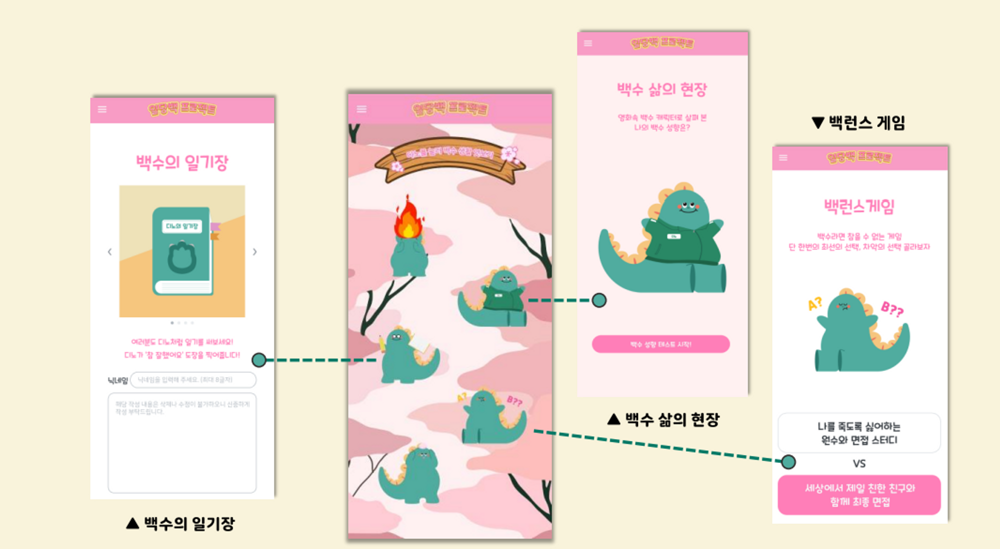
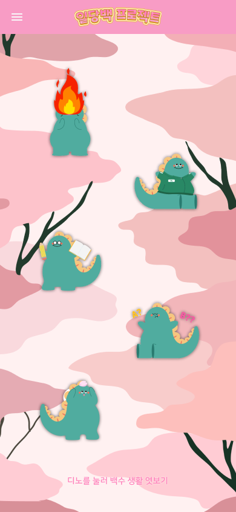
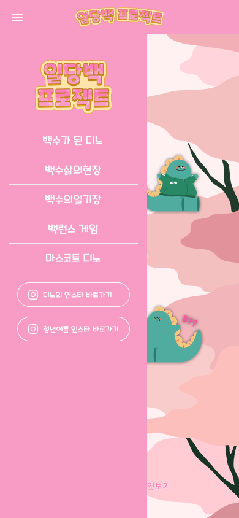
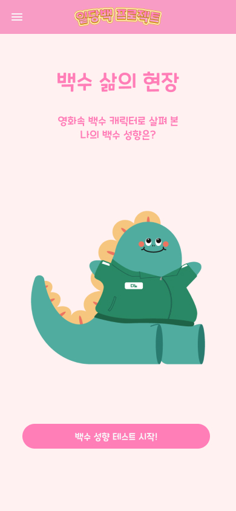
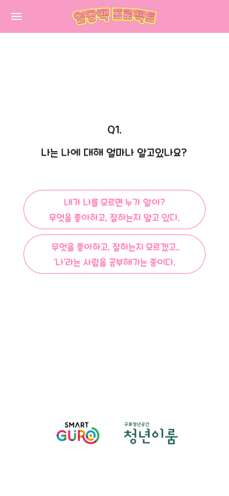
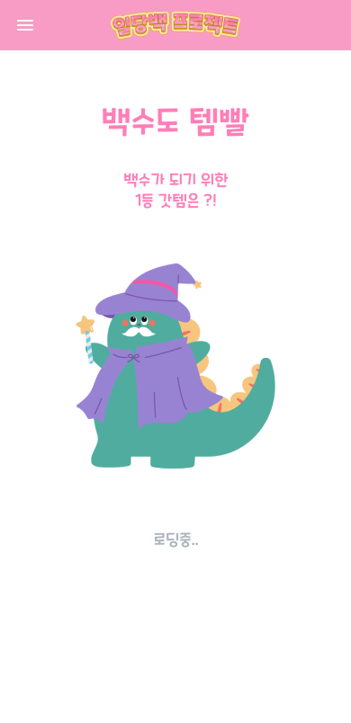
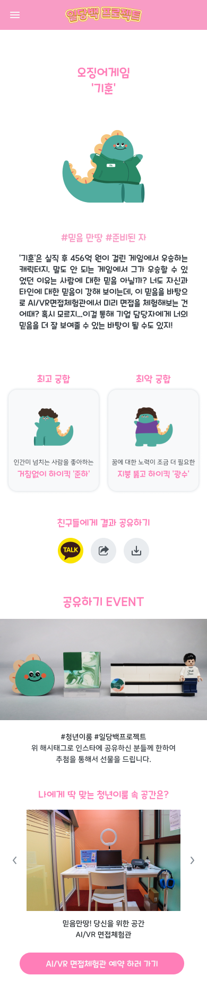
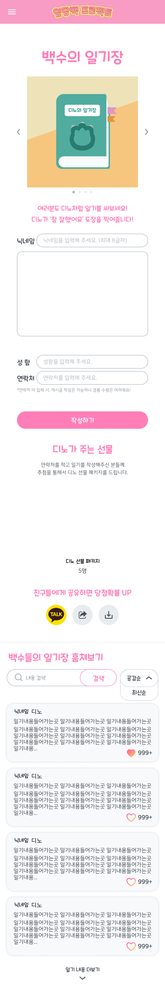
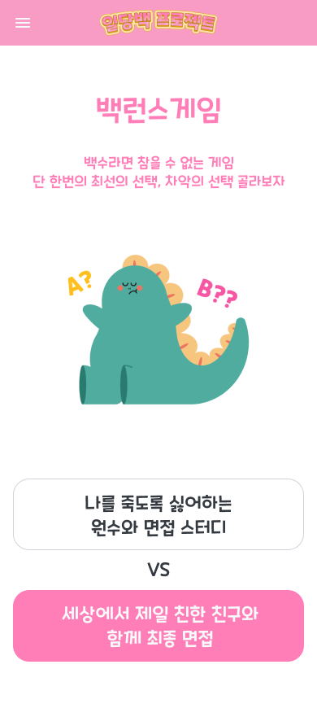
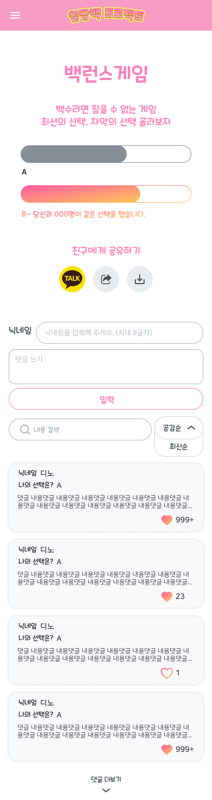

이 문서는 실제 코드와 저장소 안의 화면 캡처만 기준으로 작성했다. 확인되지 않은 동작은 추측으로 채우지 않았고, 현재 활성 구현은 /home/runner/work/hardcarry2_team3/hardcarry2_team3/frontend/src 와 /home/runner/work/hardcarry2_team3/hardcarry2_team3/backend 중심으로 정리했다.
핵심 요약
사용자는 홈에서 스토리·심리테스트·일기장·밸런스게임으로 이동한다. 테스트/일기/밸런스게임은 모두 프런트엔드에서 입력을 받고, 백엔드 API가 저장 또는 집계를 수행한 뒤, 결과 화면이 다시 그 값을 보여준다.

예시 캡처: 저장소에 포함된 프로젝트 이미지. 화면 설명용이며, 실제 동작 판단은 코드 기준으로만 했다.
frontend/src/Main.jsx 에서 /, /test, /ontest, /result, /wait, /write, /story, /endstory, /game, /gameresult 를 등록한다.
문서 해석 주의
저장소 루트의 /home/runner/work/hardcarry2_team3/hardcarry2_team3/src 아래에도 다른 React 코드가 있지만, 이 문서는 별도 설명이 없는 한 현재 활성 앱으로 보이는 frontend/src 중심으로 정리했다.

캡처: images/mobile_home_screen.png

캡처: images/mobile_menu_on_click.png
| 번호 | 쉬운 역할 설명 | 실제 코드명(보조) | 입력 · 처리 · 출력 |
|---|---|---|---|
| 1 | 상단 타이틀 | Home.jsx / maintitle | 사용자 입력 없음. 홈 정체성을 보여주는 정적 이미지다. |
| 2 | 디노 스토리 이동 | <a href="/story"> | 클릭 입력을 받아 /story 로 이동한다. |
| 3 | 일기장 이동 | <a href="/write"> | 클릭 후 일기 작성/목록 화면으로 이동한다. |
| 4 | 심리테스트 이동 | <a href="/test"> | 클릭 후 테스트 소개 화면으로 이동한다. |
| 5 | 밸런스게임 이동 | <a href="/game"> | 클릭 후 양자택일 화면으로 이동한다. |
| 6 | 메뉴 열기 버튼 | Navbar.jsx / isSideMenuActive | 버튼 클릭이 setSideMenuActive(!isSideMenuActive) 로 전달되어 메뉴 표시 상태를 토글한다. |
| 7~11 | 메뉴 내부 바로가기 | /story, /test, /write, /game, /endstory | 별도 데이터 처리 없이 라우트 이동만 담당한다. |
화면-코드 연결 포인트
홈과 메뉴는 모두 링크 기반 이동만 수행한다. 서버 요청은 여기서 발생하지 않고, 각 기능 화면에 진입한 뒤에야 API 호출이 시작된다. 관련 파일: /home/runner/work/hardcarry2_team3/hardcarry2_team3/frontend/src/component/Home/Home.jsx, /home/runner/work/hardcarry2_team3/hardcarry2_team3/frontend/src/component/navbar/Navbar.jsx.

캡처: images/mobile_unemployed_scene.jpg
| 번호 | 역할 | 코드명 | 설명 |
|---|---|---|---|
| 1 | 테스트 시작 연결 | Story.jsx / <Link to="/test"> | 사용자가 스토리를 읽은 뒤 심리테스트 소개 화면으로 넘어가게 한다. |
마스코트 페이지는 여러 정적 이미지와 외부 링크 버튼을 렌더링한다. 코드상 입력값은 없고, 출력은 http://www.youtheroom.kr/ 외부 사이트로의 이동이다.
관련 파일: /home/runner/work/hardcarry2_team3/hardcarry2_team3/frontend/src/component/EndStory/EndingStory.jsx
후임 개발자 메모
이 두 화면은 API 호출과 DB 저장이 없다. 따라서 레이아웃 변경, 이미지 교체, 링크 교체가 주된 유지보수 포인트다.
버튼 클릭만 받는다.
React 라우터 Link 또는 일반 앵커로 페이지를 이동한다.
다음 화면 전환 또는 외부 사이트 이동.
Test.jsx 는 소개 문구와 시작 버튼만 가진다. 시작 버튼은 <Link to="/ontest"> 로 구현되어 질문 화면으로 이동한다.

캡처: images/mobile_unemployed_scene_quest.png
| 번호 | 화면 요소 | 실제 코드 | 입력값 의미와 사용 위치 |
|---|---|---|---|
| 1 | 현재 질문 번호/문장 | questionmum[step], questionlist[step] | step 상태값으로 현재 질문을 고른다. |
| 2 | 상단 선택지 | onClick(yesselect) | yesselect = 0. 선택 결과가 전역 배열 select[step] 에 기록된다. |
| 3 | 하단 선택지 | onClick(noselect) | noselect = 1. 역시 select[step] 에 기록된다. |
| 4 | 이전 질문 버튼 | previewOnClick() | 이전 질문으로 돌아가도록 setStep(step - 1) 을 호출한다. |
핵심 처리
질문 화면은 사용자의 답변을 바로 서버로 보내지 않는다. 먼저 10개 답변을 프런트엔드 배열에 모은 뒤, 마지막 문항까지 끝나면 navigate("/wait", { state: { select } }) 로 로딩 화면에 전달한다.
관련 파일: /home/runner/work/hardcarry2_team3/hardcarry2_team3/frontend/src/component/Test/Test.jsx, /home/runner/work/hardcarry2_team3/hardcarry2_team3/frontend/src/component/OnTest/OnTest.jsx


| 번호 | 역할 | 설명 |
|---|---|---|
| 1 | 로딩 안내 | 결과 계산 중이라는 상태를 보여준다. |
| 2 | 질문 배열 전송 | Wait.jsx 가 state.select[0..9] 를 JSON으로 만들어 POST /api/test/postTestArray 로 전송한다. |
| 3 | 유형 이름/영화 출처 | 응답 객체의 testResult.type_name, type_from 으로 결과 제목을 렌더링한다. |
| 4 | 공유 버튼 | 카카오 공유, 링크 복사, 이미지 저장 기능을 실행한다. |
| 5 | 추천 프로그램 이동 | 현재 결과 유형에 맞는 외부 링크 배열 golink[resultstep] 를 연다. 예시 값이 아니라 코드에 하드코딩된 링크다. |
back-test.js / postTestResult 는 10개 답변을 순회하면서 6개 유형 점수(gihun, chulsoo, junha, ryuhwan, yongnam, kwangsoo)를 증가시킨다. 가장 높은 유형을 찾아 back_test 테이블에서 결과 행을 조회하고, 연결된 궁합 유형(type_like, type_dislike)도 추가 조회한다.
반환값 의미
프런트엔드 결과 화면은 단순 문자열이 아니라 testResult, resultLike, resultDislike 3개 객체를 받아 사용한다. 실제 렌더링은 일부 DB 값 대신 프런트 하드코딩 텍스트도 함께 사용한다.
result: {1: 0|1, ... 10: 0|1} → POST /api/test/postTestArray → back_test.type_id/type_name/type_from/type_like/type_dislike/type_attend 조회·증가 → 결과 컴포넌트 표시

캡처: images/mobile_unemployed_diary.png
| 번호 | 화면 요소 | 입력값 의미 | 사용 위치 |
|---|---|---|---|
| 1 | 닉네임 입력 | values.nickname | 서버에 diary_writter 로 전달된다. |
| 2 | 일기 본문 | values.content | diary_content 로 저장된다. |
| 3 | 이벤트 참여 체크 | values.choice | diary_checked 값 O/X 로 변환된다. |
| 4 | 성함 | values.name | 이벤트 참여 시 diary_name 에 저장된다. |
| 5 | 연락처 | values.phone | 이벤트 참여 시 diary_phone 에 저장된다. |
| 6 | 개인정보 동의 | values.private | 프런트엔드 검증에만 직접 쓰이며, 미동의 시 이벤트 참여 저장을 막는다. |
| 7 | 작성 완료 버튼 | 클릭 이벤트 | openModal() 이 검증 후 저장 요청을 보낸다. |
Write.jsx 는 POST /api/diary/createDiary 로 다음 예시 구조를 보낸다: { diary_writter, diary_content, diary_checked, diary_name, diary_phone }. 여기서 예시 값은 설명용이며 실제 값은 사용자가 입력한다.
백엔드는 먼저 back_diary 에 본문/작성자/작성시각/IP/브라우저를 저장하고, 이어서 같은 diary_id 로 back_diary_check 에 이벤트 참여 여부와 개인정보를 저장한다.
연결키 구분
화면 조회키는 라우트가 아니라 폼 상태값이다. 저장 연결키는 백엔드가 생성한 back_diary.diary_id 이며, 이 값이 back_diary_check.diary_id 와 back_diary_like.diary_id 로 이어진다.
DiaryList.jsx 는 처음 렌더링될 때 getData(0) 를 호출해 GET /api/diary/getDiary?page=0&size=4&sort=latest&keyword= 요청을 보낸다.
반환값: { totalItems, diaryList, totalPages, currentPage }. 이 중 diaryList 가 화면 카드 목록으로 렌더링된다.
하트 클릭 시 toggleHeart(diary.likes, diary.diary_id) 가 실행되고 GET /api/diary/diaryLike?diary_id=... 요청을 보낸다.
서버는 back_diary_like 에서 IP·브라우저·쿠키 기반 중복 여부를 찾고, dlike_use 값을 O/X 로 토글하면서 back_diary.diary_like 카운트를 증감한다.
쿠키 사용 위치
프런트엔드는 각 게시글 ID를 쿠키 키로 사용해 현재 브라우저에서 이미 공감한 글인지 표시한다. 백엔드도 작성자명 쿠키(diary_writter)를 읽어 좋아요 기록에 보조적으로 사용한다.
| 입력 | 처리 함수 | 반환값 의미 |
|---|---|---|
| 더보기 버튼 | moreDiary() | 다음 페이지 번호를 계산해 4건씩 추가 조회한다. |
| 하트 클릭 | toggleHeart() | dlike_use 가 O 면 증가, X 면 감소로 해석된다. |
| 정렬/검색 UI | 현재 연결 없음 | 화면 요소는 있으나 코드상 실제 요청 파라미터는 고정값 sort=latest, keyword="" 이다. |
후임 개발자 확인 포인트
일기장 검색창과 정렬 셀렉트는 화면에 존재하지만, 현재 확인한 코드에서는 사용자 입력을 실제 조회 파라미터에 연결하지 않는다. 문서상 의도와 실제 구현이 다를 수 있으니 수정 전에 요구사항을 다시 확인하는 편이 안전하다.
관련 파일: /home/runner/work/hardcarry2_team3/hardcarry2_team3/frontend/src/component/Write/DiaryList.jsx, /home/runner/work/hardcarry2_team3/hardcarry2_team3/backend/controllers/back-diary.js

캡처: images/mobile_balance_game.png
| 번호 | 화면 요소 | 입력값 의미 | 사용 위치 |
|---|---|---|---|
| 1 | A 선택지 버튼 | 문자 코드 A, 화면 상태값 0 | 서버 집계는 A, 결과 화면 이동은 0 을 사용한다. |
| 2 | B 선택지 버튼 | 문자 코드 B, 화면 상태값 1 | 역할은 A와 같고 값만 다르다. |
버튼 클릭 시 onClick("A"|"B") 가 GET /api/balance/selectBalance?balance_type=... 요청을 보낸다.
같은 클릭 흐름 안에서 onNumberClick(0|1) 가 브라우저 쿠키 balance_type 을 설정하고 /gameresult 로 이동한다.
백엔드는 back_balance_count.balance_selected 값을 증가시켜 전체 선택 수를 집계한다.
조회키와 저장키 구분
결과 화면에서 사용자가 어떤 쪽을 골랐는지는 프런트 라우트 상태값 state.select = 0|1 로 조회한다. 반면 서버 집계 테이블의 저장키는 문자 코드 A/B 다.

캡처: images/mobile_balance_game2.png
| 번호 | 역할 | 처리 단계 |
|---|---|---|
| 1 | 결과 비율 표시 | GameResult.jsx 가 GET /api/balance/balanceResult 응답의 cntA, cntB, rateA, rateB 를 받아 바와 문구에 사용한다. |
| 2 | 댓글 작성 입력 | 닉네임·의견을 받아 POST /api/balance/createReply 로 전송한다. |
| 3 | 공유/저장 | 공유 링크, 이미지 저장, SNS 공유를 처리한다. |
| 4 | 댓글 목록/하트 | GameList.jsx 가 댓글 목록을 그리고, 각 댓글 하트 클릭 시 GET /api/balance/replyLike?balance_id=... 를 호출한다. |
예시 구조: { balance_name, balance_content, balance_type }. 여기서 balance_type 은 결과 화면의 쿠키값을 사용한다. 예시 값은 설명용이며 실제 값은 사용자 입력이다.
백엔드는 back_balance 에 댓글 본문, 닉네임, 선택한 타입, 작성 시각, IP, 브라우저를 저장한다.
좋아요 토글
댓글 좋아요는 back_balance_like 테이블에서 balance_id + IP + 브라우저 + 이름 조합을 찾고, blike_use 를 O/X 로 바꾸며 본문 테이블의 balance_like 수치를 함께 조정한다.
문서화 시 주의한 점
DB 설명은 schema.sql 과 Sequelize 모델 파일을 함께 비교해 작성했다. 일부 테이블은 스키마 파일과 모델 정의가 완전히 같지 않아서, 후임 개발자는 운영 DB 구조를 별도 확인하는 것이 안전하다.
산출물
HTML 원본: /home/runner/work/hardcarry2_team3/hardcarry2_team3/work-map-guide.html
PDF 결과: /home/runner/work/hardcarry2_team3/hardcarry2_team3/hardcarry2_team3_screen_code_handover.pdf